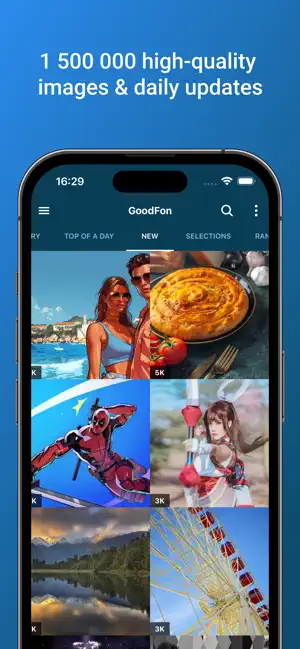
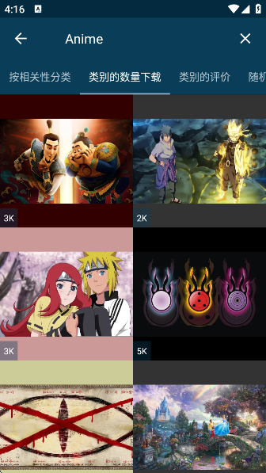

还在为手机壁纸发愁？GoodFon 让你从挑图到设屏一步到位
GoodFon 是一款专注手机壁纸的应用，海量高清素材配合省流量设计，五分钟就能上手。本文带你从下载安装到熟练使用，避开新手常见坑。
这篇文章能带你从完全不懂到把 GoodFon 用得顺手，全程不需要任何技术基础——跟着步骤走就行。
它到底是干嘛的？一个生活化类比讲明白
想象一下，你手机里的壁纸就像家里的窗帘——用久了会腻，想换又懒得跑市场挑。GoodFon 就是一个"线上壁纸集市"：
- 海量摊位：几十万张高清壁纸按主题、颜色、场景分门别类摆好，你不用翻遍整个互联网
- 先看再买：每张壁纸先给你看缩小版预览，确认好看了再加载大图，不会白白耗流量
- 一键挂窗帘：选中喜欢的，点一下就自动帮你"挂"到手机桌面上，连裁切定位都帮你弄好
简单说，GoodFon 解决的就是"想换壁纸但嫌麻烦"这件事——去GoodFon官网逛一圈就能感受到这个产品的设计思路。
五分钟上手：从下载安装到第一次设屏
别担心，整个过程真的不到五分钟。跟着下面六步走：
第一步：下载安装
打开手机上的应用商店搜 GoodFon，或者直接去GoodFon下载拿安装包也行。iOS 用户在 App Store 找，Android 用户去各大应用市场都能搜到。安装包不大，网络正常的话一两分钟搞定。

第二步：打开应用，允许权限
第一次打开 GoodFon，系统会弹出几个权限请求。核心就两个：
- 照片/相册权限：用来保存下载的壁纸，也用来把壁纸"设为桌面"
- 存储权限（Android 版）：Android 需要额外的存储权限才能把壁纸文件存到本地
都点"允许"就好，不给权限的话后面下载和设壁纸都会卡住。
第三步：逛一圈首页
权限给完，直接就是首页。你会看到一堆瀑布流式的壁纸缩略图，向下滑不断加载新的。
右上角通常有个搜索图标，底部有分类 Tab（比如"热门""最新""分类"之类的）。不用急着点，先随便滑几下感受下界面就好。
第四步：挑一张喜欢的
觉得某张好看？点进去看大图。这时候才会加载高清预览——之前列表里只给你看几十 KB 的缩略图，这就是 GoodFon 省流量的关键设计。
第五步：一键设为壁纸
在壁纸详情页，找到"设为壁纸"按钮，点一下。系统会让你选：
- 主屏幕：只换桌面背景
- 锁屏：只换锁屏背景
- 两者同时：一键全换，最省事
选好之后，GoodFon 会帮你自动裁切到合适的屏幕比例，确认就完成了。按一下电源键看看锁屏，是不是已经变了？

第六步（可选）：下载保存
如果特别喜欢这张壁纸想留着以后用，可以在详情页点下载按钮（通常是向下箭头图标）。下载后的壁纸会自动存到手机相册里，随时可以重新设为壁纸或者分享给朋友。
就这样，五分钟搞定。
上手后先玩这三个功能
刚上手别急着到处点，先把下面三个核心功能玩透，这才是 GoodFon 的真正价值。
功能一：省流量浏览——别怕逛，流量烧不了多少
很多人担心"逛壁纸会不会很耗流量"。GoodFon 在这方面做得特别聪明：
- 列表页只加载几十 KB 一张的缩略图，逛 20 张才几百 KB
- 只有点进详情页才加载高清预览（大概 500 KB ~ 1 MB）
- 下载原图才真正消耗流量（Full HD 壁纸 2~5 MB，4K 壁纸 5~15 MB）
这意味着你可以放心逛，偶尔下载几张，一个月下来流量消耗通常在 50 MB 以内。想调更多省流量细节（比如仅 Wi-Fi 自动换壁纸），去GoodFon文档翻一翻就知道怎么设。如果你用的是 Wi-Fi，那完全不用担心。
你会看到什么：列表加载飞快，拇指划屏不会卡；点进详情页会有短暂的加载动画，这是在等高清预览图。
这意味着什么：你可以每天花几分钟逛一逛，不用担心月底流量不够用。
功能二：主屏幕和锁屏分开设——效果好很多
这是新手最容易忽略的功能。GoodFon 支持主屏幕和锁屏用不同的壁纸——这两个地方的展示逻辑完全不一样：
- 主屏幕被 App 图标、文件夹、小部件挡了大半，壁纸只露出背景层
- 锁屏只被时间/日期/通知挡一小部分，画面展示比例大得多
所以很多人会：
- 主屏幕用一张偏深色、低对比度的壁纸（不挡图标文字）
- 锁屏用一张有视觉冲击力的（反正看一眼就解锁）
设置方法和之前一样：在壁纸详情页点"设为壁纸"，然后选"锁屏"还是"主屏幕"。想两张都换，选"两者同时"也行，但效果未必是最好看的——建议分别设置。
你会看到什么：锁屏换了一张，主屏幕没动；或者反过来。
这意味着什么：你可以根据两个场景的不同需求，各自挑最合适的壁纸，不用纠结一张图得兼顾两边。
功能三：下载管理——把存过的壁纸集中查看
逛得多了，你可能下载了十几张甚至几十张壁纸。GoodFon 有个专门的下载管理入口，帮你把所有下载过的壁纸集中到一个地方：
- 再次设为壁纸：不用再去重新搜，直接从下载记录里挑
- 分享给朋友：觉得某张特别好看，直接通过微信/QQ发出去
- 删除不需要的：定期清理释放手机存储空间
Android 用户可以在系统相册的 GoodFon 文件夹里找到这些图；iPhone 用户会有一个 GoodFon 相册专门存放。
你会看到什么：一个按时间倒序排列的下载列表，每张图下面有下载时间。
这意味着什么：你下载的东西不会丢，想找的时候随时能翻出来。
小白的三个常见疑问
逛壁纸会不会耗流量？怎么同时换主屏幕和锁屏？下载的壁纸存哪了？这是新手问到最多的三个问题，下面逐一给你说清楚。
疑问一：我用移动数据逛 GoodFon，流量烧得快吗？
不用太担心。GoodFon 的产品设计本身就是省流量的——缩略图几十 KB 一张，高清预览也才半兆多。就算你每天逛半小时、偶尔下载一张，一个月下来也就几十 MB。如果还是不放心，可以在 Wi-Fi 下先收藏一批，移动数据时只翻收藏夹里的缩略图。
疑问二：收藏和下载有什么区别？我该用哪个？
这两个是独立的操作：
- 收藏：在 GoodFon 里标记"我喜欢"，不占手机存储空间，数据保存在 GoodFon 的服务器上
- 下载：把壁纸文件保存到手机本地相册，占存储但可以离线查看
建议这样用：先收藏一堆可能喜欢的，等确认了真的想要某几张，再下载。毕竟存太多图会占空间，很多人下载之后其实只用其中一小部分。
疑问三：iOS 版会不会出现下载重复图片的问题？
旧版本确实有这个问题——下载一张壁纸，相册里会出现两张一模一样的，还会额外创建一个 GoodFon 相册。不过这些在 iOS 版 2.1 和 2.2 里都已经修复了。如果你之前遇到过，更新到最新版就好。
写在最后
GoodFon 上手真的不难——五分钟安装、挑图、设屏，第一次就能用起来。上面三个功能（省流量浏览、分屏设置、下载管理）是新手最值得先碰的，掌握了它们，基本就不会出什么问题。
如果想进一步玩，可以试试自动换壁纸功能——设一个定时器，让锁屏每天自动换一张。日落主题是 GoodFon 最受欢迎的分类之一，橙红紫粉的渐变特别适合当锁屏，有空可以去搜搜看。
想深挖更多功能细节（比如自动换壁纸怎么配、锁屏裁切怎么调），多逛几圈自然就熟了。
这套资料在GitHub、Gitee、GitCode三个仓库都有维护，国内用户访问 Gitee 和 GitCode 会更快一些。